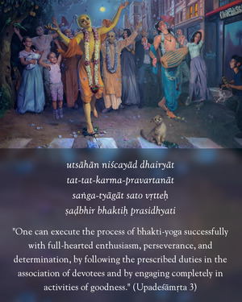

One should engage oneself in the practice of yoga with determination and faith and not be deviated from the path. One should abandon, without exception, all material desires born of mental speculation and thus control all the senses on all sides by the mind.

The yoga practitioner should be determined and should patiently prosecute the practice without deviation. One should be sure of success at the end and pursue this course with great perseverance, not becoming discouraged if there is any delay in the attainment of success. Success is sure for the rigid practitioner. Regarding bhakti-yoga, Rūpa Gosvāmī says:
utsāhān niścayād dhairyāt
tat-tat-karma-pravartanāt
saṅga-tyāgāt sato vṛtteḥ
ṣaḍbhir bhaktiḥ prasidhyati
“One can execute the process of bhakti-yoga successfully with full-hearted enthusiasm, perseverance and determination, by following the prescribed duties in the association of devotees and by engaging completely in activities of goodness.” (Upadeśāmṛta 3)
As for determination, one should follow the example of the sparrow who lost her eggs in the waves of the ocean. A sparrow laid her eggs on the shore of the ocean, but the big ocean carried away the eggs on its waves. The sparrow became very upset and asked the ocean to return her eggs. The ocean did not even consider her appeal. So the sparrow decided to dry up the ocean. She began to pick out the water in her small beak, and everyone laughed at her for her impossible determination. The news of her activity spread, and at last Garuḍa, the gigantic bird carrier of Lord Viṣṇu, heard it. He became compassionate toward his small sister bird, and so he came to see the sparrow. Garuḍa was very pleased by the determination of the small sparrow, and he promised to help. Thus Garuḍa at once asked the ocean to return her eggs lest he himself take up the work of the sparrow. The ocean was frightened at this, and returned the eggs. Thus the sparrow became happy by the grace of Garuḍa.
Similarly, the practice of yoga, especially bhakti-yoga in Kṛṣṇa consciousness, may appear to be a very difficult job. But if anyone follows the principles with great determination, the Lord will surely help, for God helps those who help themselves.